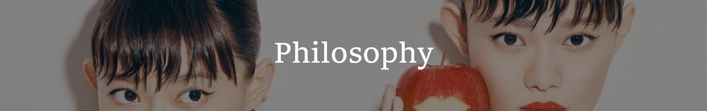

Introduce
Design
Interview
Tribute
요시다유니
철학
자연의 산물은 정말 신비롭고 같은 모양을 하고 있는 것이
하나도 없는 소중한 작품이라고 생각합니다.
이렇게 작품으로서 자연의 모습을 다른 시각으로 접해보면
새로운 발견이 있을 수 있기에
재밌게 즐겨주시면 감사하겠습니다.
이번에는 ‘식(食)’을 테마로 한 작업들을 소개했지만
이런 작품 이외에도 일상생활 속에서
시점을 바꿔 소소한 행복을 발견할 수 있는
작품을 만들고 있으니 많은 관심 부탁드리겠습니다!